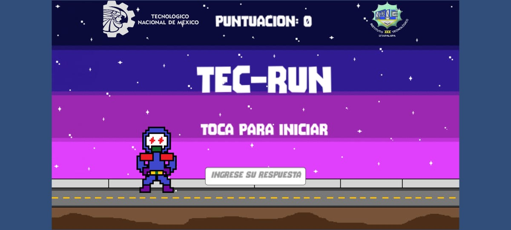
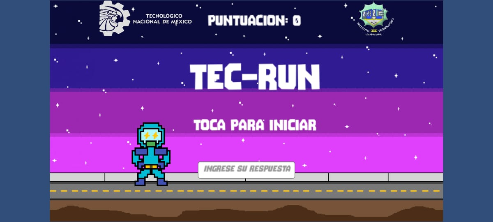
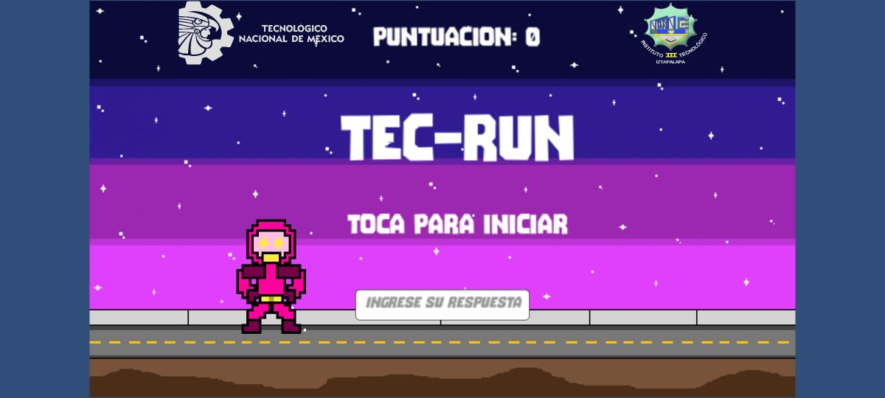

Tec-Run
DESCRIPCION
Tec-Run el novedoso videojuego precisamente creado para ayudar a la educacion de una forma distinta a la tradicional
nacio gracias a que los desarrolladores, Iván Perez (programador) Luis Pedro Olivares (diseñador) Josue Bazan (Documentacion)
se dieron cuenta de un problema muy recurrente en Mexico en el tema de la educacion a niños. Las matematicas!
y se decidieron a desarrollar un videojuego entretenido, amigable para los niños y a su vez educativo, ya que estimula la
habilidad matematica y obliga al niño a ejercitar su mente para lograr cada vez mas puntaje, esto gracias al sistema que tiene.
Consta de un proceso de juego mediante el jugador avanza y mientras mas avanza, la velocidad incrementa hasta colisionar con
un obstaculo, una ves pasa esto al jugador se le da la oportunidad de continuar con su progreso mediante una operacion basica
sencilla con los operadores aritmeticos suma(+), resta (-), multiplicacion(*) y division(/), esto completamente al azar,
si el jugador da la respuesta correcta continua con su progreso(puntaje), de lo contrario pierde y reinicia el contador
Tec-Run Nueva version
 DESCARGAR  DESCARGAR  DESCARGARDISEÑOS DE PERSONAJE
DISEÑOS NUEVOS Y RENOVADOS COLORES VARIADOS PARA DISTINTOS GUSTOS!!! DISEÑO ESPECIFICO PARA ESTADO DE REPOSO DEL PERSONAJE
DISEÑOS NUEVOS Y RENOVADOS COLORES VARIADOS PARA DISTINTOS GUSTOS!!! DISEÑO ESPECIFICO PARA EL SALTO DEL PERSONAJE
DISEÑOS NUEVOS Y RENOVADOS COLORES VARIADOS PARA DISTINTOS GUSTOS!!! DISEÑOS ENTRE OTROS 7 MAS PARA ESTADO "CORRIENDO" DEL PERSONAJE
¿DONDE FUE DESARROLLADO?
Nuestro videojuego ha sido desarrollado utilizando Unity, una de las plataformas más avanzadas
y versátiles en el mundo del desarrollo de videojuegos. Unity Technologies, la empresa detrás de
este potente motor, ha revolucionado la industria del juego al proporcionar herramientas
intuitivas y eficaces para desarrolladores de todos los niveles.
un motor de desarrollo líder en la industria que permite crear juegos multiplataforma con
gráficos impresionantes y un rendimiento optimizado. Unity se destaca por su interfaz intuitiva,
que facilita el desarrollo tanto para novatos como para expertos, y su poderosa comunidad de
soporte y recursos. Además, sus constantes actualizaciones y una amplia gama de plugins
disponibles en la Unity Asset Store nos permiten integrar fácilmente nuevas funcionalidades
y mantener nuestro juego a la vanguardia tecnológica.
JUGABILIDAD
Actualmente nuestro videojuego se encuentra disponible para Sistemas Operativos
Windows y Android el cual el link de descarga lo encuentras hasta arriba de esta pagina
"DESCARGAR"
seguimos trabajando en actualizaciones para tenerlo en dispositivos IOS, MAC hasta Linux
Sin mas agradecemos tu visita y descarga, sobre todo las recomendaciones de nuestro
pequeño proyecto